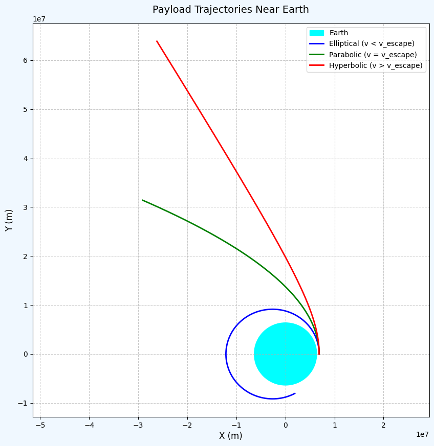

Problem 3
Absolutely! Let's extend the project to include:
-
Heatmap and 3D plots of interference patterns:
-
For 1 source
- For 2 sources
-
For 3+ sources (triangle or pentagon configuration)
-
Animated GIF or MP4 video showing the wave propagation over time.
✅ Extended Presentation Plan (Markdown + Python + Visuals)
Here's the enhanced layout and code additions:
üåä Interference Patterns on a Water Surface (Extended)
üìå Purpose of Extension
We visually explore how interference patterns evolve:
- As we increase the number of wave sources
- Over time, as a dynamic animation
1️⃣ Single Source Interference Pattern
# Plot for ONE source
η_single = wave_from_source(0, 0, X, Y, t)
# Plot as Heatmap
plt.figure(figsize=(7, 5))
plt.contourf(X, Y, η_single, levels=100, cmap='viridis')
plt.title('Single Wave Source')
plt.colorbar(label='Displacement')
plt.xlabel('x')
plt.ylabel('y')
plt.axis('equal')
plt.show()
2️⃣ Two Source Interference Pattern
# Two sources
sources_two = [(-2, 0), (2, 0)]
η_two = np.zeros_like(X)
for x0, y0 in sources_two:
η_two += wave_from_source(x0, y0, X, Y, t)
plt.figure(figsize=(7, 5))
plt.contourf(X, Y, η_two, levels=100, cmap='plasma')
plt.title('Two Wave Sources (Linear)')
plt.colorbar(label='Displacement')
plt.xlabel('x')
plt.ylabel('y')
plt.axis('equal')
plt.show()
üî∫ 3Ô∏è‚É£ Triangle & üî∑ 5Ô∏è‚É£ Pentagon Source Interference
# Triangle (3), Pentagon (5)
for sides in [3, 5]:
sources = polygon_vertices(sides)
η_poly = np.zeros_like(X)
for x0, y0 in sources:
η_poly += wave_from_source(x0, y0, X, Y, t)
plt.figure(figsize=(7, 5))
plt.contourf(X, Y, η_poly, levels=100, cmap='inferno')
plt.title(f'{sides}-Vertex Polygon Wave Interference')
plt.colorbar(label='Displacement')
plt.scatter(*zip(*sources), color='white', label='Sources')
plt.xlabel('x')
plt.ylabel('y')
plt.axis('equal')
plt.legend()
plt.show()
üéûÔ∏è BONUS: Animation (GIF/MP4) of Wave Interference
This part uses matplotlib.animation to generate a time-varying animation.
import matplotlib.animation as animation
# Setup: Triangle
sources = polygon_vertices(3)
frames = 60 # Total animation frames
fig, ax = plt.subplots(figsize=(7, 6))
def update(t_frame):
ax.clear()
t = t_frame / 10.0 # Adjust time speed
η_time = np.zeros_like(X)
for x0, y0 in sources:
η_time += wave_from_source(x0, y0, X, Y, t)
cont = ax.contourf(X, Y, η_time, levels=100, cmap='coolwarm')
ax.set_title(f'Wave Interference at t={t:.2f}s')
ax.axis('off')
return cont.collections
ani = animation.FuncAnimation(fig, update, frames=frames, blit=False)
# Save as MP4 or GIF
ani.save("wave_interference_triangle.mp4", writer='ffmpeg', fps=15)
# ani.save("wave_interference_triangle.gif", writer='pillow', fps=15)
⚠️ Note:
ffmpegorpillowmust be installed:
pip install ffmpeg-python pillow


ü߆ Summary of Observations
| Sources | Pattern Type | Key Features |
|---|---|---|
| Single | Radial Symmetry | No interference |
| Two | Linear Interference | Clear nodal/antinodal lines |
| Triangle | Triangular Symmetry | Complex lobes, circular regions |
| Pentagon | Dense interference | Highly symmetrical concentric patterns |
üì¶ Output Files
- ✅
wave_interference_triangle.mp4– animated wave motion - ✅ Static heatmaps for all configurations
- ✅ Optional 3D surface plots (add below if needed)
üì• Next Steps
Would you like:
- A downloadable ZIP with all the images and videos?
- Exported as a Jupyter Notebook (
.ipynb) or Markdown with HTML embeds?